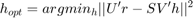

Contents
clear; clc; close all;
Loading the data and plotting the input signal x(n) and the MRI response vector r(n):
load('hrfDeconv.mat') subplot(2, 1, 1); stem(x, 'filled') xlabel('Time (s)') title('Input vector x(n)') subplot(2, 1, 2); plot(r) xlabel('Time (s)') title('Response vector r(n)')
a)
The convolution matrix is obtained from createConvMat by passing the vector x and the size of the columns of X (i.e. M). The function does so by creating a matrix with x as its columns shifted down by 1 unit across each column and having 0s padded for the x to make it of size N + M - 1
N = length(x); % length of the input_vector M = length(r) + 1 - N; % Since length(r) = N + M - 1 X = createConvMat(x, M);
Creating 10 random haemodynamic response vectors and passing through the conv function with x or by convolving them using the pre-computed X matrix and checking if the response vectors obtained by both the methods are the same
for i = 1:10 % Creating random hemodynamic responses h = rand(15, 1); % Computing the response vectors for the haemodynamic response obtained % from the manually computed X matrix r_X = X * h; % Computing the response vectors for the haemodynamic response obtained % from the conv function r_mat = conv(x, h); % Checking for the equality of the computed response vectors if isequal(r_X, r_mat) disp([num2str(i), ': Response through X and conv function are the same']); else disp('Response through X and conv function are different'); end end
1: Response through X and conv function are the same 2: Response through X and conv function are the same 3: Response through X and conv function are the same 4: Response through X and conv function are the same 5: Response through X and conv function are the same 6: Response through X and conv function are the same 7: Response through X and conv function are the same 8: Response through X and conv function are the same 9: Response through X and conv function are the same 10: Response through X and conv function are the same
The response vectors are the same for all the 10 random impulse vectors, which implies that the conv function on x and h is the same as multipling h with the matrix X i.e. to say X matrix reliably captures the convolution operation.
Visualizing the matrix X as an image
figure(); imagesc(X)
b)
We have to solve the minimization problem:

Performing svd on X, we have X = USV'. Hence, the optimization problem can be re-written as:
Taking U' on both sides, we have:

Let and , the optimization problem then becomes:
Since the length of is less than the length of , the matrix S is a diagonal matrix with diagonal elements for the first M rows being non-zeros and the remaining rows being 0. Hence the optimization can only happen for the first M rows and the other errors cannot be minimized. Specifically the objective function will be minimum when:
Hence we have:
where, is the pseudo-inverse of S
Because , we have
Similarly, we also have , substituting both in the optimal solution we get:
Therefore,
Using this equation, h_opt can be computed from the svd of X and r
[U, S, V] = svd(X); Spinv = 1./S'; % Taking the reciprocal of elements of transformed S which is Sinv Spinv(isinf(Spinv)) = 0; % Making all the nan values in Sinv to 0, thus getting S# h_opt = V * Spinv * U' * r; % Computing h_opt using derivation above time_h = 0: length(h)-1; figure() plot(time_h, h_opt); xlabel('Time (s)') ylabel('BOLD-response') title('Haemodynamic Response Function (HRF)')
The h_opt depicts the BOLD response for an impulse and we can see a delayed BOLD response by 4 seconds which lasts for about 2-4 seconds. This aligns with the BOLD responses seen in MRI where the activity phase-locked to the stimulus creates a response with a delayed by about 4 seconds.
c)
Computing the fftshift and visualizng the power of the fft:
figure() F_h_opt = fftshift(fft(h_opt)); % Computing shifted fft of the HRF pow_h_opt = abs(F_h_opt).^2; % Computing power of the fft fshift = ceil(-length(pow_h_opt)/2: length(pow_h_opt)/2-1); plot(fshift, pow_h_opt); title('HRF Power spectrum') xlabel('Frequency (Hz)') ylabel('Power')
From the graph, we can see that the filter has a high power for low frequencies and power decreases with increase in frequency. Therefore, this filter will allow low frequency signals to pass through and suppress high-frequency signals. Therefore, this is a low-pass filter. Specifically, this filter will pass frequencies from 0-2 Hz and suppress the rest.
Function
function X = createConvMat(x, M) dim_X = length(x) + M - 1; % Since the size of X is N + M - 1 * M x(dim_X) = 0; % Padding zeros to x to make it of the length N + M - 1 X = zeros(dim_X, M); % Initializing X matrix for i = 1:M X(:, i) = circshift(x, i - 1); % Adding the padded x vector to x column by shifting it down by 1 unit for each column end end